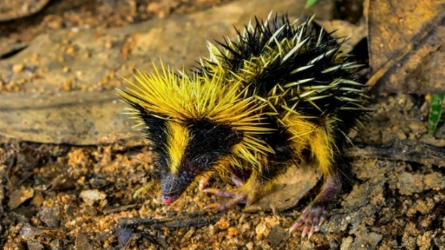
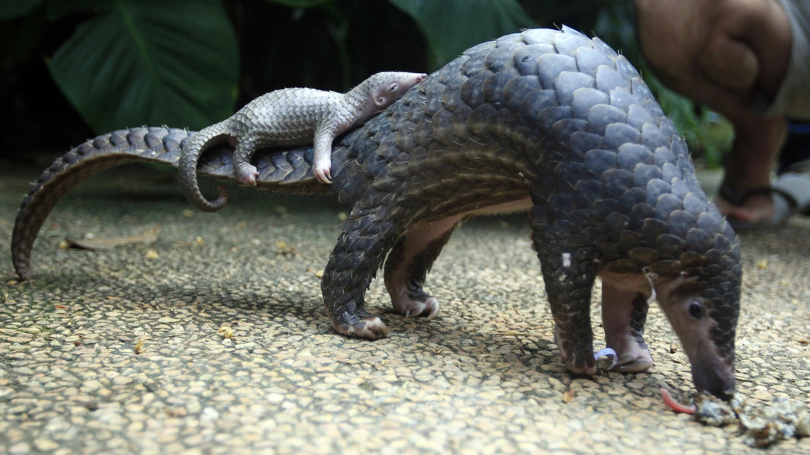
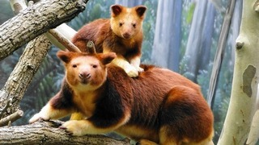
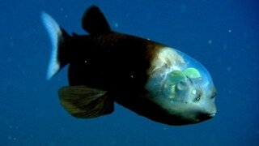
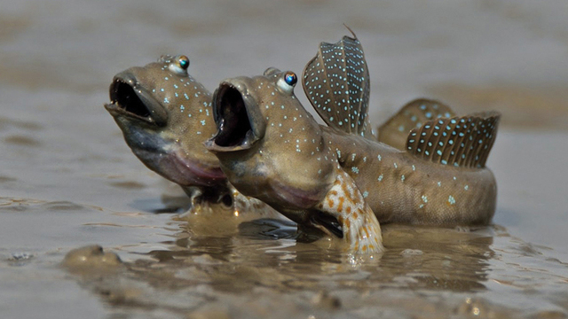
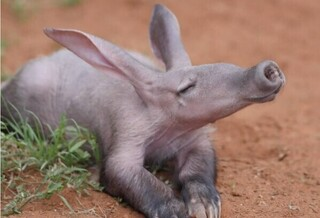
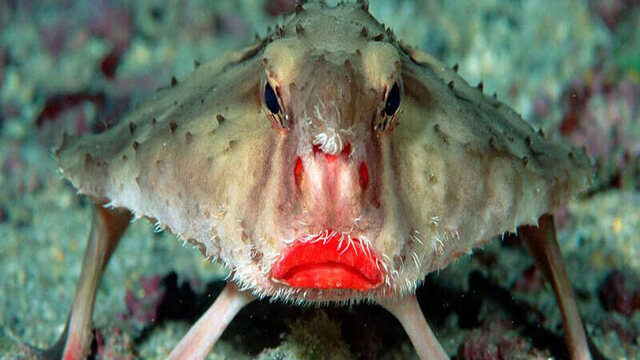

7. Смугастий тенрек
Підвид – щетинисті їжачки. Це невелика тваринка – 15-18 сантиметрів в довжину з коротким хвостиком. Він важить всього близько 150 грамів. Живе на півночі Мадагаскару. 
На потилиці має своєрідний гребінець з довгих гострих голок і безліччю колючок, що розкидані упереміш з густою чорною шерстю по всьому тілу. А ще він уміє вібрувати окремо взятими голками на своїй спині.
6. Панголін
Панголін – стародавня тварина з роду ящурів. Перші знахідки їхніх решток датуються періодом 70 млн років тому. Живе на територіях Південної Африки, Південно-Східної Азії, деревні його види – у тропічних лісах Китаю та Індії. 
Довжина тіла 30-88 см, а вага у різних видів варіює від 4 кг до 35 кг. Має величезні кігті та надзвичайно довгий червоподібний язик. Луски є найбільш самобутньою рисою панголінів; вони покривають дорсальну поверхню тіла і хвоста і складаються з аглютенованого волосся (кератину). Шкіра та луски складають велику частку ваги цих тварин - від ⅓ до ½ ваги.
5. Деревний кенгуру
Це дивовижне звірятко зовнішнім виглядом і звичками нагадує одночасно ведмедя, білку і мавпу При цьому, за людськими мірками воно надзвичайно ліниве і напівсонне. Ось ця дивна істота і є сумчастий деревний кенгуру, що мешкає в Австралії. 
Невеликі розміри (досягає в довжину 60 сантиметрів при вазі близько 7 кілограмів) дозволяють деревному кенгуру легко утримуватися навіть на тонких гілках. Він вправно і впевнено переміщається серед вершин двадцятиметрових дерев. Ніякої вам боязні висоти або нападів запаморочення.
4. Риба з прозорою головою
Риба мешкає на глибині 600-800 метрів, там, де на кожен квадратний сантиметр тіла створюється тиск в середньому 700 кілограмів. При цьому риба з прозорою головою почувається так, як і повинна почуватися риба у воді – комфортно. 
Довжина тіла 30-88 см, а вага у різних видів варіює від 4 кг до 35 кг. Має величезні кігті та надзвичайно довгий червоподібний язик. Луски є найбільш самобутньою рисою панголінів; вони покривають дорсальну поверхню тіла і хвоста і складаються з аглютенованого волосся (кератину). Шкіра та луски складають велику частку ваги цих тварин - від ⅓ до ½ ваги.
3. Мулистий стрибун
Панголін – стародавня тварина з роду ящурів. Перші знахідки їхніх решток датуються періодом 70 млн років тому. Живе на територіях Південної Африки, Південно-Східної Азії, деревні його види – у тропічних лісах Китаю та Індії. 
Довжина тіла 30-88 см, а вага у різних видів варіює від 4 кг до 35 кг. Має величезні кігті та надзвичайно довгий червоподібний язик. Луски є найбільш самобутньою рисою панголінів; вони покривають дорсальну поверхню тіла і хвоста і складаються з аглютенованого волосся (кератину). Шкіра та луски складають велику частку ваги цих тварин - від ⅓ до ½ ваги.
2. Трубкозуб
Панголін – стародавня тварина з роду ящурів. Перші знахідки їхніх решток датуються періодом 70 млн років тому. Живе на територіях Південної Африки, Південно-Східної Азії, деревні його види – у тропічних лісах Китаю та Індії. 
Довжина тіла 30-88 см, а вага у різних видів варіює від 4 кг до 35 кг. Має величезні кігті та надзвичайно довгий червоподібний язик. Луски є найбільш самобутньою рисою панголінів; вони покривають дорсальну поверхню тіла і хвоста і складаються з аглютенованого волосся (кератину). Шкіра та луски складають велику частку ваги цих тварин - від ⅓ до ½ ваги.
1. Нетопир Дарвіна
Панголін – стародавня тварина з роду ящурів. Перші знахідки їхніх решток датуються періодом 70 млн років тому. Живе на територіях Південної Африки, Південно-Східної Азії, деревні його види – у тропічних лісах Китаю та Індії. 
Довжина тіла 30-88 см, а вага у різних видів варіює від 4 кг до 35 кг. Має величезні кігті та надзвичайно довгий червоподібний язик. Луски є найбільш самобутньою рисою панголінів; вони покривають дорсальну поверхню тіла і хвоста і складаються з аглютенованого волосся (кератину). Шкіра та луски складають велику частку ваги цих тварин - від ⅓ до ½ ваги.